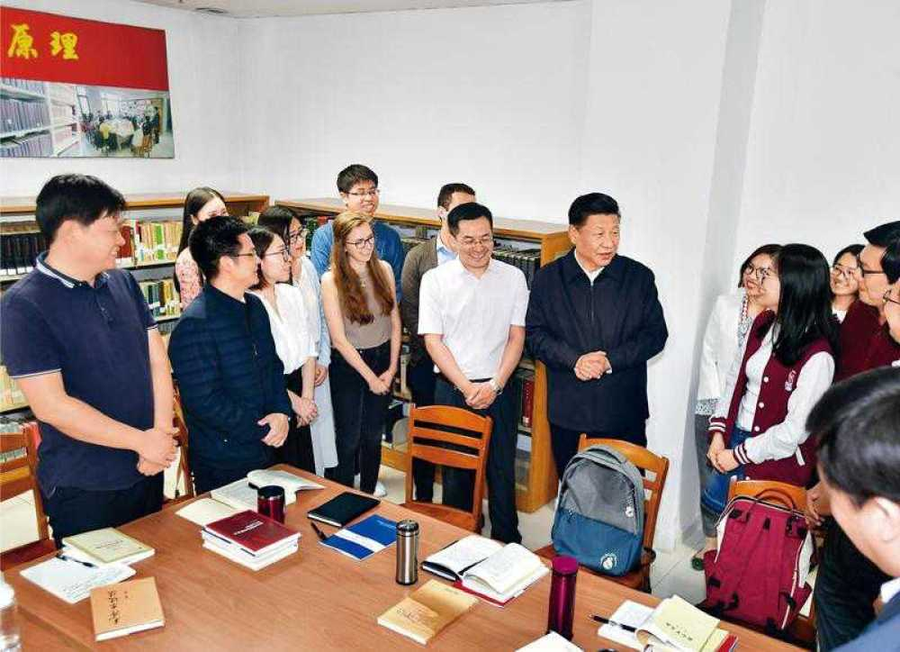

11月16日出版的第22期《求是》杂志，发表中共中央总书记、国家主席、中央军委主席习近平在十九届中央政治局举行第五次集体学习时，就《共产党宣言》及其时代意义发表的重要讲话：《学习马克思主义基本理论是共产党人的必修课》。文章指出，我们党的老一辈革命家都是受《共产党宣言》的影响而走上革命道路的。我们党的第一部党纲就是按照《共产党宣言》精神制定的。我们党开辟的新民主主义革命道路、社会主义革命道路、社会主义建设道路、中国特色社会主义道路，都是把马克思主义基本原理同中国具体实际相结合的伟大创造。中国共产党是《共产党宣言》精神的忠实传人。
2018年5月2日，中共中央总书记、国家主席、中央军委主席习近平来到北京大学考察。这是习近平在北京大学马克思主义学院，与正在就“解读新时代”进行座谈交流的中外学生亲切交谈。 本期《学习故事》与您分享习近平与《共产党宣言》的故事，让我们一起从故事里“感悟马克思主义的真理力量”。《共产党宣言》，毛泽东看了不下100遍早在2009年，习近平同志就曾讲过这样一个故事：“读马列、学毛著，要精，要原原本本地学、仔仔细细地读，下一番真功夫。邓小平同志、江泽民同志和胡锦涛同志 也都在不同时期反复强调认真研读原著的重要性。”对于《共产党宣言》的重视，习近平在多个场合反复谈及，在他眼中，“马克思主义就是我们共产党人的‘真经’，‘真经’没念好，总想着‘西天取经’，就要贻误大事！”真理的味道非常甜!